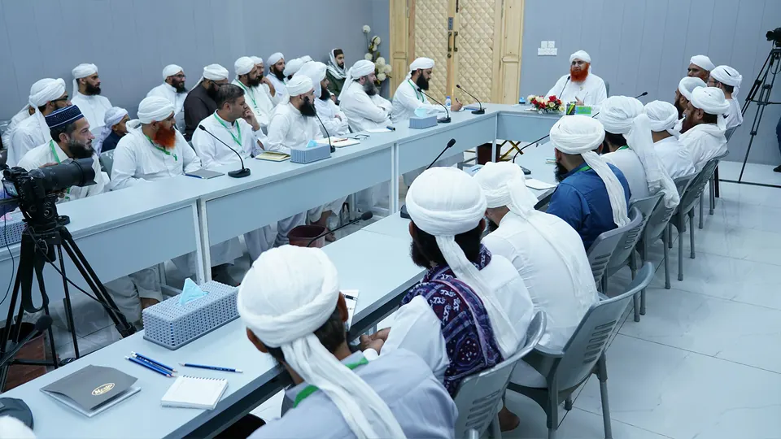

About Dawat-e-Islami
A global, non-political movement for the Qur'an and Sunnah, founded in 1981.

Who we are
Dawat-e-Islami
Dawat-e-Islami is a global, non-political Islamic organization devoted to spreading the teachings of the Qur'an and Sunnah. It was founded on 2 September 1981 in Karachi, Pakistan, by Shaykh-e-Tariqat, Ameer-e-Ahl-e-Sunnat, Hazrat Allama Maulana Muhammad Ilyas Attar Qadri Razavi Ziyai, one of the great Islamic scholars and spiritual guides of our time.
His vision is spiritual purification, unity, and raising the moral and religious standards of Muslims everywhere. Guided by compassion, Islamic knowledge and spiritual enlightenment, Dawat-e-Islami has inspired millions of people to live by the Qur'an and Sunnah.
Today it works through dozens of departments, each focused on one need: masajid and Islamic centres, Qur'an classes, Islamic schools, Jamias that train scholars, spiritual cure, funeral services, the Madani Channel, and humanitarian welfare.

Our founder
"I must strive to reform myself and the people of the entire world."Ameer-e-Ahl-e-Sunnat, a scholar and spiritual guide of the 21st century
In Canada
Dawat-e-Islami Canada
Dawat-e-Islami Canada carries this work into Canadian communities, with 13 centres in 6 provinces and Jamia-tul-Madina campuses in Montreal and Cornwall.
Our centres offer:
- Daily congregational prayers and Jumu'ah
- Qur'an Tafseer sessions and adult Qur'an reading classes
- Weekly family gatherings (Ijtima) and gatherings on the blessed nights
- Madrasa-tul-Madina: Hifz and Nazirah for children
- Faizan Weekend Islamic School for children in public school
- Short courses, workshops and youth classes
- Scholarly training at Jamia-tul-Madina
All of this follows the 12 Religious Activities for brothers and the 8 Religious Activities for sisters.
TBD When Dawat-e-Islami started in Canada, and a few lines of its history.
Dawat-e-Islami Canada is a registered Canadian charity, BN 81933 5662 RR0001.
Learn more